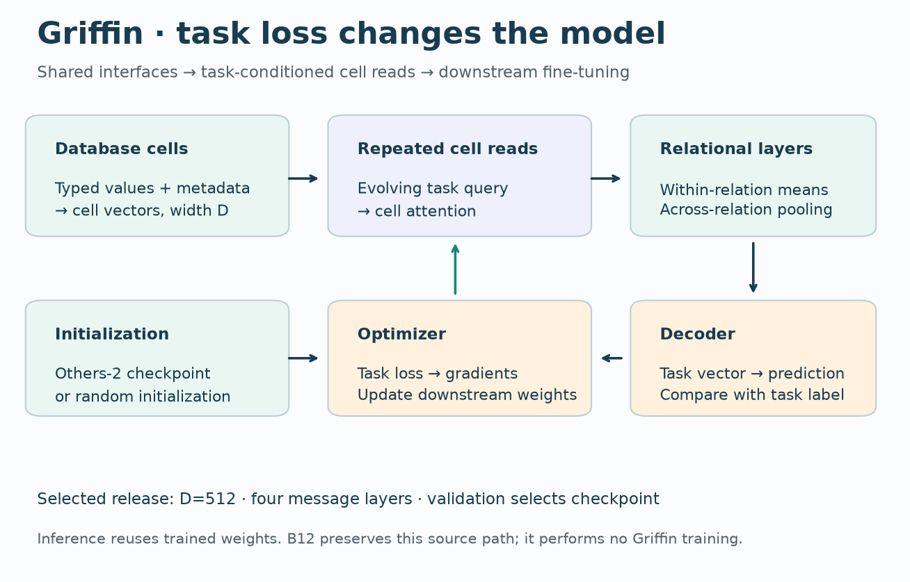
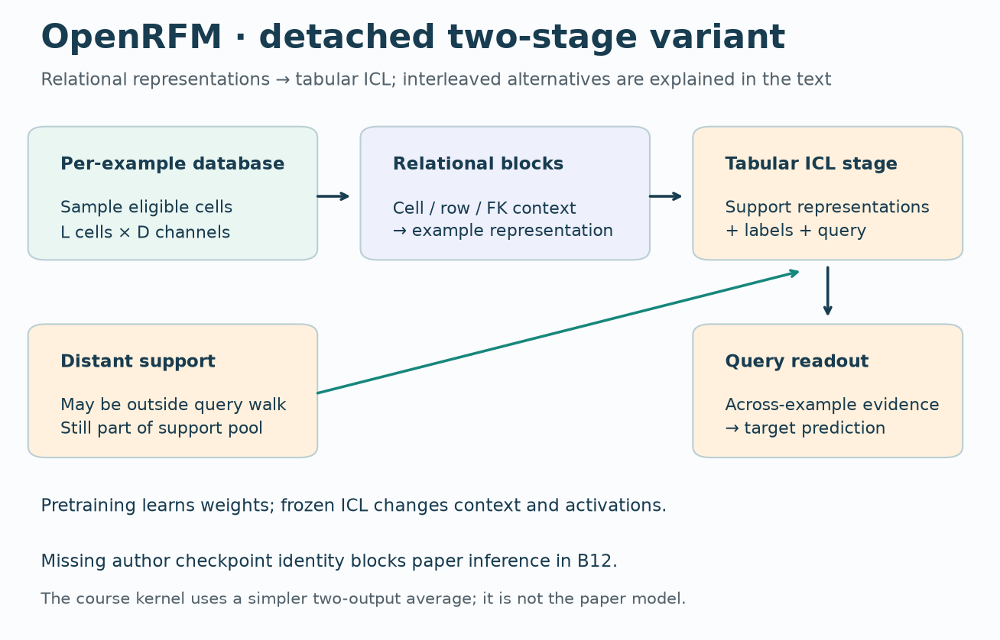
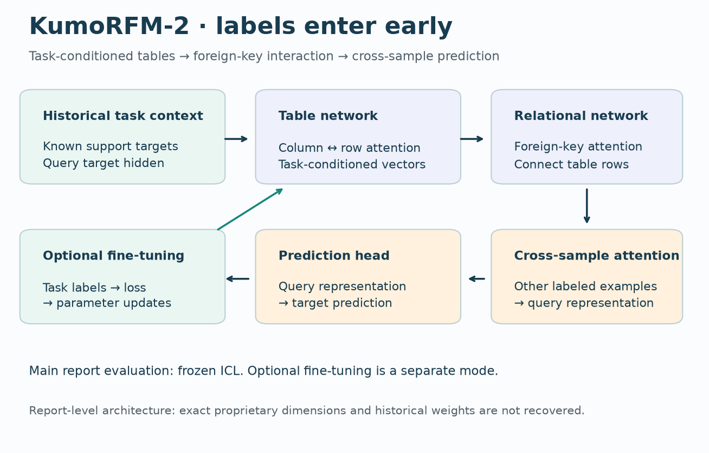
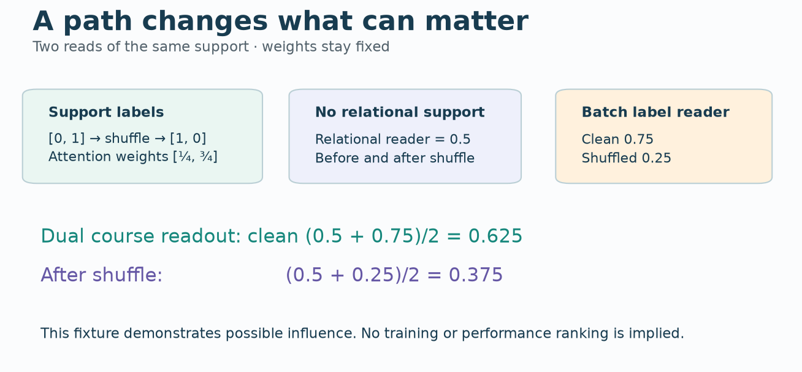
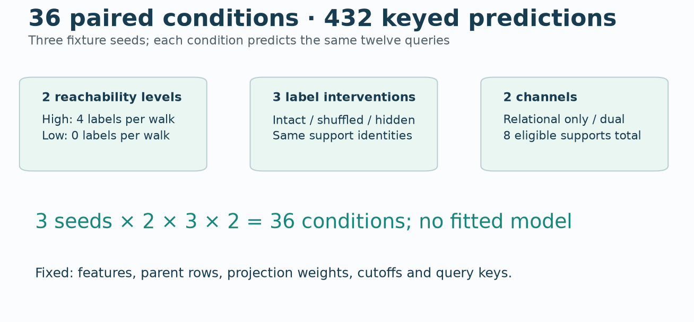
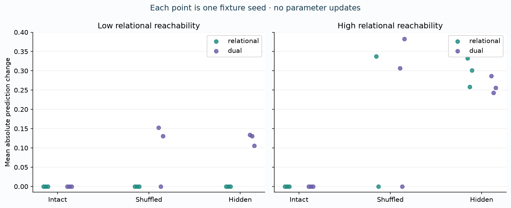

B12 · Where does a new task enter the model?¶
Research bridge · Griffin / OpenRFM / KumoRFM
Previous: B11 · Student lab · Executed solution · Reference card
B11 compared models trained for a particular task. It left a practical question open: must a new prediction task require another training run? Here you will follow how labeled examples change a prediction. Your tangible win is a defensible adaptation matrix and a test that distinguishes a missing information path from an unhelpful one.
Route through the lesson. Recall the terms, trace three architectures, calculate one prediction, then run the corruption experiment. The source appendix is for auditing the reproduction boundary.
1 · Retrieve before reading¶
Without reopening B10/B11: what is the complete identity of a temporal query? Why can correct attention still consume forbidden information? What does validation select in a supervised model?
A query is the example to predict. Here its identity is (entity, cutoff), because the same entity at a later time has different available evidence. A support example is an example with an observed label supplied as context. A label is the answer to a prediction task. A parameter is a stored numerical weight learned during training. An activation is an intermediate value recomputed for the current input.
Pretraining learns reusable parameters across source data or tasks. Fine-tuning updates parameters for a downstream task. In-context learning, abbreviated ICL, changes predictions by supplying examples at inference; the stored parameters can remain fixed. A checkpoint saves those parameters. Frozen weights do not imply fixed predictions.
In plain terms. Learning a new rule by changing your notes resembles fine-tuning. Working through new examples using the same notes resembles contextual adaptation. The analogy concerns where the information is stored, not how human learning works.
2 · Model architecture: three places for task information¶
Read each path from database input to prediction. D denotes hidden vector width; S the number of support examples; L the sampled cell count. Different implementations need not share these values.
Griffin · update the task model¶
Cells use shared encoders and metadata. Task-conditioned cell attention rereads them during relational message passing; neighbor aggregation and a decoder produce the target. The selected release fine-tunes pretrained weights on downstream labels. The readable release model, trainer and sampling code are included in the lab archive. Primary reading: Griffin, model and transfer experiments.


- Cells + metadata → shared cell encoders.
- Task-conditioned cell reads → relational aggregation.
- Decoder → task loss → optimizer updates weights.
- Validation selects checkpoint; inference uses updated weights.
Griffin selected release: labels train parameters; source model and trainer preserved.
Follow one label. A training label contributes to the loss; the optimizer changes weights. A later query uses those changed weights. This is distinct from making that label an input value beside the query. The release's few-shot neighbor sampler is not, by itself, proof of label-based ICL.
OpenRFM · add an example-to-example path¶
The paper diagnoses sparse labeled context in a relational transformer. Its dual-stage design adds a tabular ICL stage to relational representations. Its pretraining study varies synthetic diversity, real data and a prototype objective. The latter encourages useful class representations. Primary reading: OpenRFM §§3–5.


- Eligible cells sampled for each example.
- Relational blocks → example representations.
- Tabular ICL stage reads support representations and labels.
- Distant support can enter outside the query walk; query readout produces prediction.
OpenRFM conceptual path: relational processing plus cross-example ICL; no B12 checkpoint execution.
Follow one label. A distant support example may be absent from the query's sampled neighborhood yet available to the second-stage ICL computation. Relation-level interaction and cross-example interaction are different paths. The pictured detached variant pools relational-transformer representations and feeds them to a tabular ICL model. An interleaved variant inserts ICL layers between relational blocks; learned linear adapters match their vector widths. These are distinct integration choices. A mean of two scalar predictions is only our diagnostic, not either architecture.
KumoRFM-2 · task information enters early¶
Known context targets enter table representation construction. Alternating row/column attention is followed by foreign-key and cross-sample interaction. The report describes synthetic and real pretraining; its main evaluations use frozen inference, while a separate setting fine-tunes weights. Primary reading: KumoRFM-2 §3.


- Known context targets enter table inputs early.
- Column/row attention builds task-conditioned row vectors.
- Foreign-key and cross-sample attention mix evidence.
- Prediction head reads the query; optional fine-tuning separately updates weights.
KumoRFM-2 report architecture: context labels enter table encoding; optional fine-tuning separate.
Follow one label. A context target can affect intermediate table representations before the final prediction. This differs from always attaching labels only to a final readout. An accessible service is a comparator, not a theoretical upper bound. The report's architecture description does not supply authenticated historical weights.
Fill the adaptation matrix¶
| Selected mode | Pretraining changes weights? | New task changes weights? | Inference reads labeled context? |
|---|---|---|---|
| Griffin selected SFT release | Yes | Yes | Do not infer label ICL from sampled neighbors |
| OpenRFM frozen ICL | Yes | No | Yes |
| KumoRFM-2 main ICL evaluation | Yes | No | Yes |
| KumoRFM-2 optional fine-tuning | Yes | Yes | Context can still be used |
SFT means supervised fine-tuning: gradient updates using labeled examples. The rows classify selected modes, not permanent properties of a model family. The sources above support the architecture/mode descriptions; the table is a teaching synthesis.
3 · Worked example: a label needs a path¶
Support reachability means whether a query's sampled relational context contains an eligible labeled example. A foreign key identifies a related row. A multi-table path can bring that row into context, but the sampler may omit it.
Worked example. Two support labels are 0 and 1. Give them similarity logits 0 and log(3). A logit here is an unnormalized attention score. Exponentiating gives weights 1 and 3; dividing by their sum gives 1/4 and 3/4. Their weighted label average is 0.75.
If the relational walk reaches neither support, our course reader returns a declared fallback of 0.5. A second channel that can access both returns 0.75. Our diagnostic averages the channels: (0.5 + 0.75) / 2 = 0.625. Shuffle the labels to 1 and 0: the batch reader becomes 0.25 and the combined value becomes 0.375. No parameter changed.


Predict first: when there is no relational label path, can shuffling support labels change the relational-only output? Can it change the dual output?
Change the route, then change the labels
Turn arithmetic into an operator¶
Let q be a query vector of width D, k_i a support vector, and y_i its label. Compute similarity q · k_i / sqrt(D), where the dot is a sum of coordinate products. Apply a boolean permission mask before normalizing exponentials. The resulting weights sum to one over admitted supports. Multiply each admitted label by its weight and sum.
An empty permission set needs an explicit policy; ordinary softmax over only negative infinity is undefined. We choose 0.5 for this binary-label fixture. This is a stated course rule, not a recovered paper default. A missing forbidden label must be removed before multiplication: in floating-point arithmetic, 0 × NaN remains NaN.
Temporal admission. A label is available only if its event time and arrival time are no later than the query cutoff, and its outcome window has ended. An event at day 8 with a two-day target window becomes eligible at day 10 if it has arrived. A day-8 label arriving at day 12 is unavailable at day 10. This course fixture uses inclusive boundaries and known timestamps; historical availability in real data needs its own evidence.
4 · Experiment: hold the examples fixed, change their access¶


Held fixed within each seed: eight support rows, twelve queries, four numeric features per row, one parent feature vector per row, the complete query identities, fixed projection weights and label values before intervention. No optimizer runs. A row embedding is (row features + 0.25 × parent features) × W, where W is a fixed 4-by-4 matrix. The parent aggregation makes the feature path explicit.
Varied: three fixture seeds (0/1/2), high versus low relational reachability, intact/shuffled/hidden support labels, and relational-only versus dual channels. High reachability admits four supports per query; low admits zero. Both arms have the same eight eligible support examples available to their input protocol. The dual channel reads all eight. Thus the intervention deliberately changes effective access; it is not an equal-used-label comparison.
There are 3 × 2 × 3 × 2 = 36 conditions and 36 × 12 = 432 predictions. Shuffling permutes labels over fixed support identities, preserving their multiset. Hiding removes every label from both channels. Query labels never enter the predictor. The shuffle is one seeded draw per fixture, not a statistical test over corruption draws.
Measured: mean absolute prediction change from the intact condition and Brier score, the mean of (prediction − binary target)². Lower Brier is better on this fixture. The target comes from the sign of the first preprojection feature coordinate. It defines an arithmetic diagnostic, not real-world accuracy or calibration evidence.
| Reachability | Channel | Labels | Brier mean ± SD | Mean absolute change |
|---|---|---|---|---|
| low | relational | intact | 0.2500 ± 0.0000 | 0.0000 |
| low | relational | shuffled | 0.2500 ± 0.0000 | 0.0000 |
| low | relational | hidden | 0.2500 ± 0.0000 | 0.0000 |
| low | dual | intact | 0.2089 ± 0.0445 | 0.0000 |
| low | dual | shuffled | 0.2685 ± 0.0835 | 0.0944 |
| low | dual | hidden | 0.2500 ± 0.0000 | 0.1237 |
| high | relational | intact | 0.2702 ± 0.1040 | 0.0000 |
| high | relational | shuffled | 0.4753 ± 0.1884 | 0.2938 |
| high | relational | hidden | 0.2500 ± 0.0000 | 0.2973 |
| high | dual | intact | 0.2284 ± 0.0944 | 0.0000 |
| high | dual | shuffled | 0.3783 ± 0.1671 | 0.2296 |
| high | dual | hidden | 0.2500 ± 0.0000 | 0.2619 |
SD is sample standard deviation over three fixture seeds, not a confidence interval. Change is relative to the same seed/reachability/channel with intact labels.


Check the intervention itself. The shuffle changes four label assignments in seed 0, zero in seed 1, and six in seed 2. Seed 1 permutes IDs only within equal-label groups. Its zero effect is retained; it cannot diagnose whether the model ignores labels. A future corruption study should report the realized intervention strength alongside its intended operation.
Interpretation. In the low-reachability relational-only arm, label corruption cannot affect a prediction because the label path is absent. The dual arm can react through its other path. Invariance with a path present has several possible causes: equal attention, identical labels, a model that ignores labels, or redundant information. Therefore one corruption result does not identify a training regime or establish useful adaptation. Look at effect sizes, the path, and the task loss together.
Scope check. These are complete results for a fixed-kernel course experiment. They are not OpenRFM inference, a Griffin training run, or a Kumo implementation. A sensitive untrained kernel also demonstrates why sensitivity alone cannot prove learned feature adaptation. No architectural performance ranking follows.
5 · Reproduction: what is complete, what is blocked?¶
Full reproduction contract · Frozen source ledger · All keyed predictions · Independent checks
| Target | B12 evidence | Remaining work |
|---|---|---|
| 36-condition course diagnostic | Complete; all 432 keyed predictions independently checked | Learner implementation and defense |
| Griffin v1 Table 12, Others-2 versus no-pretrain | Full inherited release model/trainer, pinned inputs and 20-fit contract preserved | Full fits stopped by inherited budget gate; no new training |
| OpenRFM v1 Table 5 | Frozen six-row source table and artifact/protocol audit | Author code/checkpoint identity and full training/evaluation protocol unresolved; NOT_RUN |
| KumoRFM-2 main evaluation | Architecture and access audit | Historical model/service identity and complete executable protocol unresolved; NOT_RUN |
Griffin retains 512/4096 labeled subsets, five subset seeds (42–46), and two arms: twenty fits. Its earlier conservative compute projection was about $63.89 before existing reservations; this is an inherited scenario estimate, not today's price quote or observed full-run cost. B12 spends **$0** on paid execution and does not silently reduce the protocol.
The repository named T-Lab/OpenRFM describes an independent Kumo reproduction. It is not authenticated as the author release for the OpenRFM paper. A failed repository lookup also does not prove that no release exists. These source identity checks prevent accidental substitution.
For the earlier detailed treatments, revisit L164 Griffin and L191 KumoRFM-2 evaluation.
Next real experiment. Authenticate one accessible checkpoint and freeze preprocessing, support draws, query keys, label visibility, validation selection and full cost. Then test corruption on actual low/high-reachability tasks with matched support budgets. Declare any departure from a paper protocol before measuring. Until then, full-paper reproduction is NOT_RUN.
6 · Lab and defense¶
The portable notebook exposes three live tasks: temporal label eligibility, masked label attention, and label intervention. The complete experiment calls your functions directly. The blank student notebook fails; the executed solution passes an independent scalar oracle and forbidden-input tests.
EXIT. Draw the adaptation matrix from memory. Trace a support label to a query in each architecture. Explain why the low-reachability result is expected, why unchanged weights do not imply unchanged predictions, and why label sensitivity does not prove accuracy. Propose a falsifier: for example, an apparent improvement that disappears after fixing support arrival times.
Revisit the matrix tomorrow, in seven days and in thirty days. Ask the teaching agent about any unclear step, or paste your implementation and written defense for feedback. Author checks do not grade your understanding: PENDING_WRITTEN_DEFENSE.